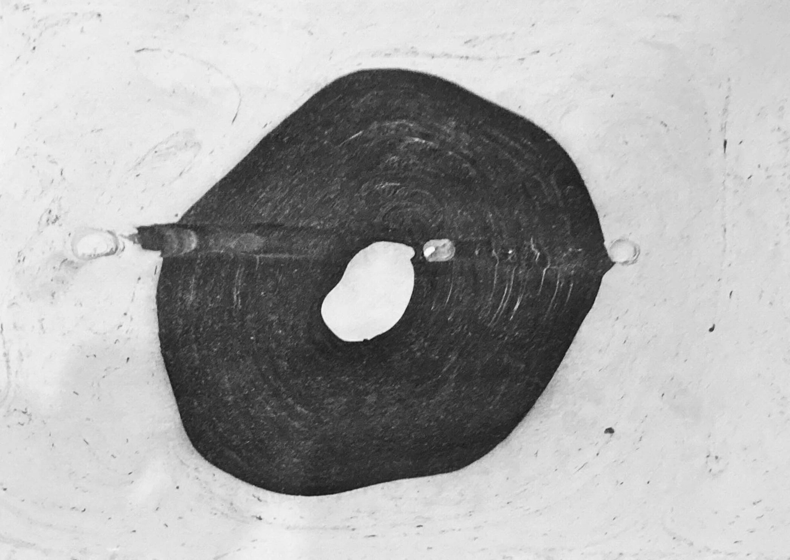
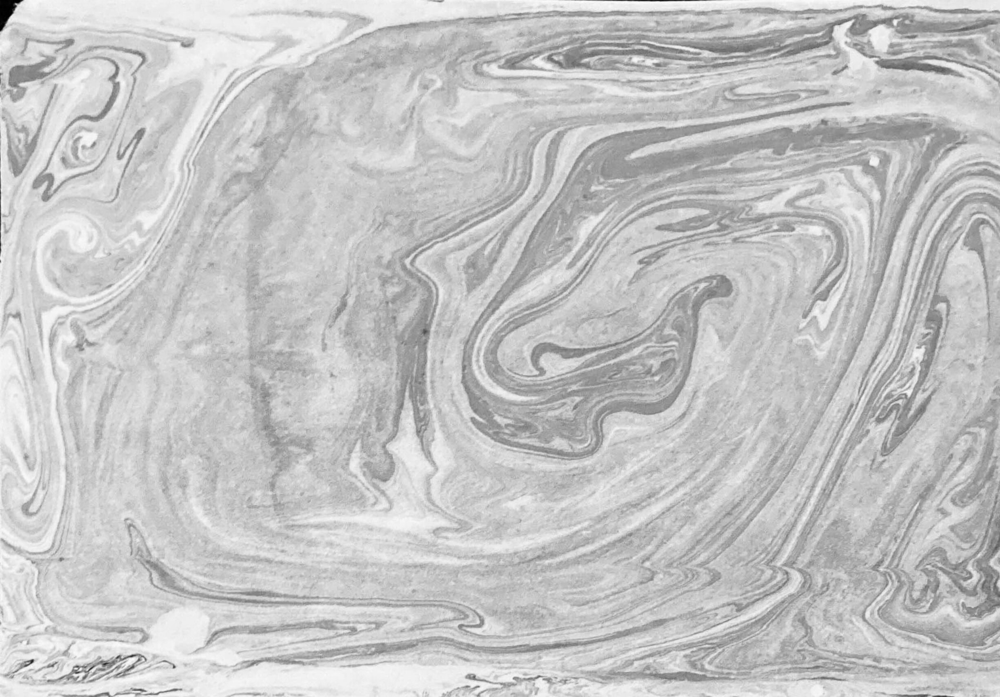

Suminagashi (AKA paper marbling) is a method in which you produce patterns similar to smooth marble as a result of ink floated on water. I used two calligraphy brushes, one dipped in "sumi ink" the other dipped in a dish-soap water solution. Alternating between dipping the two in a tray of calm water allows you to create various designs. I used 50gsm paper for this but traditionally rice paper is used. However, any paper thick enough to withstand water that is also uncoated and non-glossy will work. The pattern is transfered by placing the paper on the surface of the water and submerging it slightly. The last two rows of images on the left are examples of what kind of marbling you can get on the second dip. If your ink blobs are not dark enough, your brush may be wet. Press prints between two books to flatten them after drying.




Suminagashi